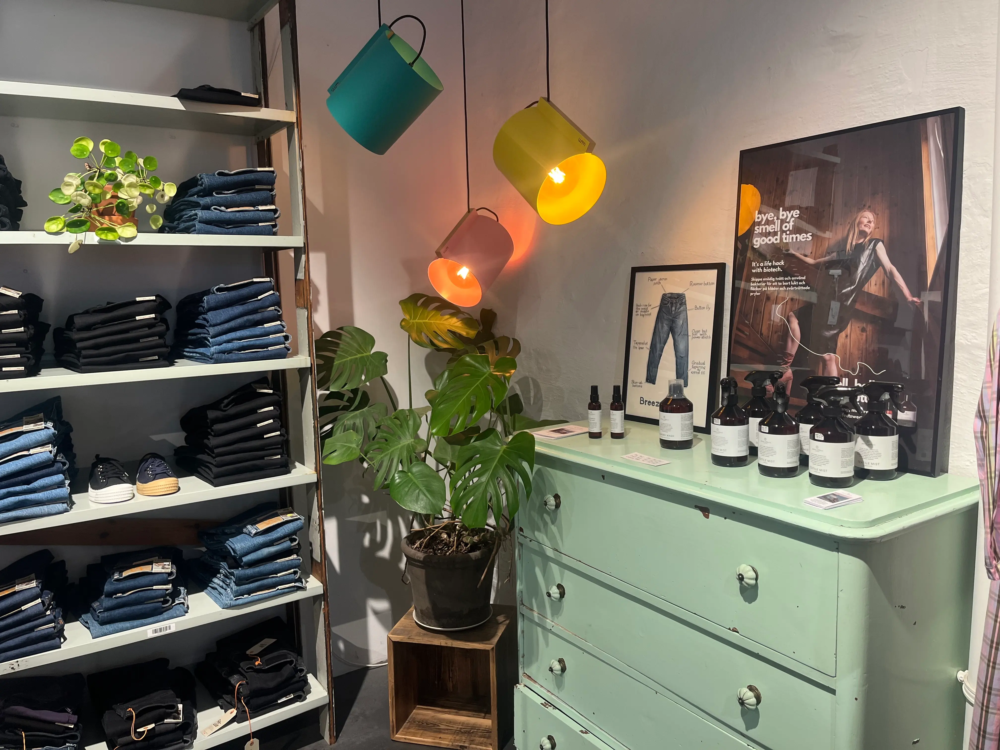
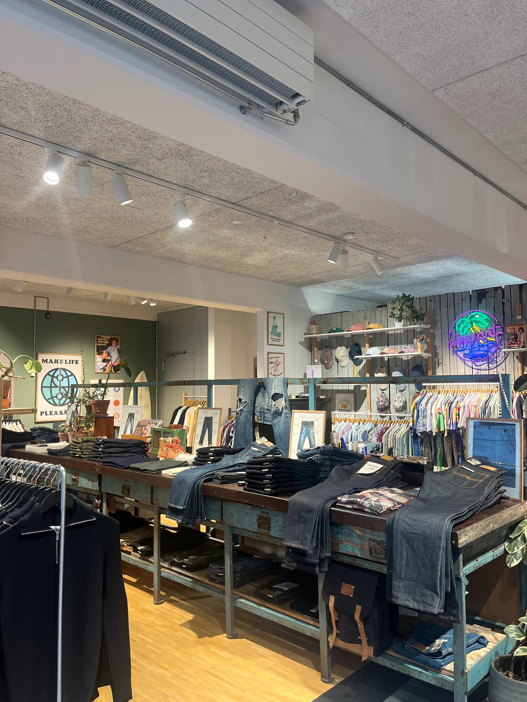
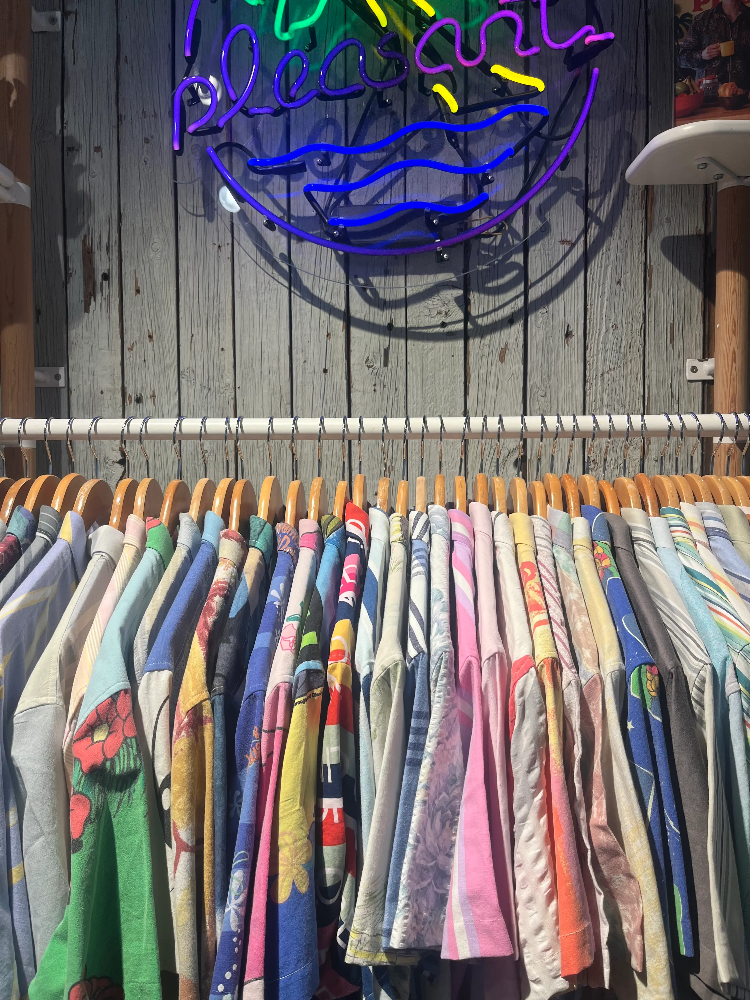
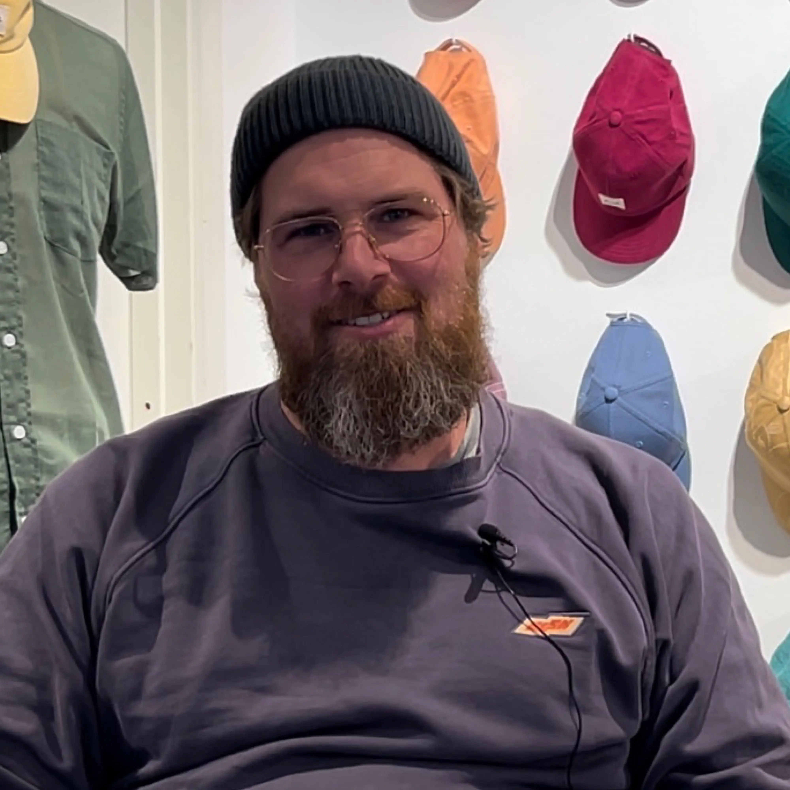
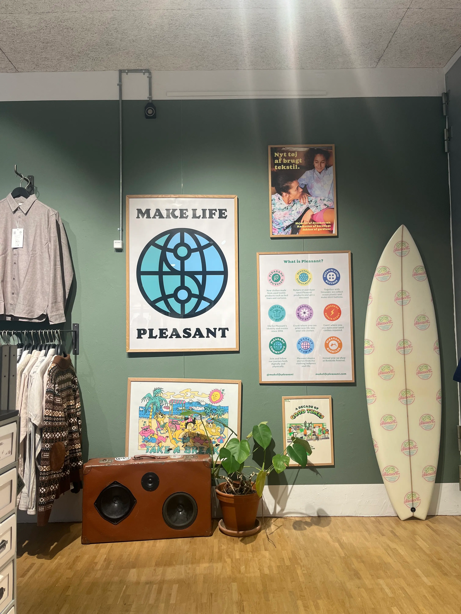

Passion for Sustainable Fashion
Søren Alling Sørensen, 46, driver og ejer tøjbutikken Res Res på Nørrebro. Det er dog ikke bare en tøjbutik, men derimod en butik med én stor passion: Mere fokus på Sustainable Fashion
Vi har besøgt Søren i hans hjertebarn, Res Res. Søren har stor passion for Sustainable Fashion, og han ønsker derfor at sætte mere fokus på netop det. Res Res opstod i ønsket om at gøre bæredygtig mode tilgængelig for så mange mennesker som muligt. Fra begyndelsen var det et lille univers til at inspirere og udfordre hinanden til at fortsætte vejen mod en modeindustri, der er i harmoni med planet og mennesker. Gennem årene er butikken vokset i størrelse, alt imens Søren fortsætter sin passion om at være bedre mod planeten.

"På daglig basis ser vi jo verdensomspændende klimaforandringer, så jeg kan ikke se, hvordan man ikke kan sætte fokus på det" - Søren
En butik med mange mål, idéer og budskaber, når det kommer til Sustainability:



